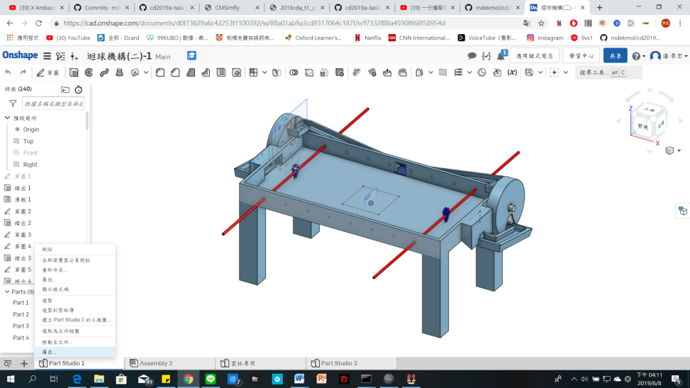
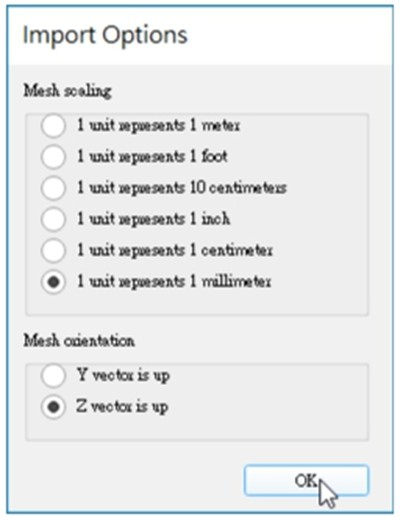
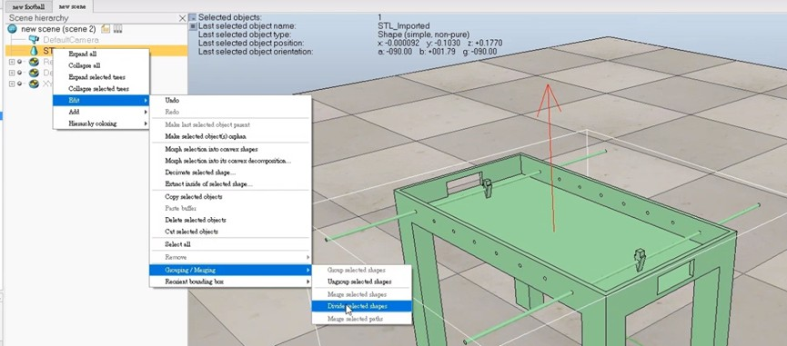
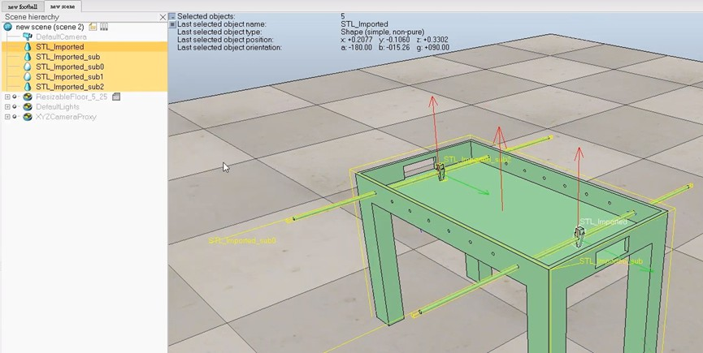
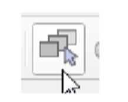
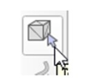
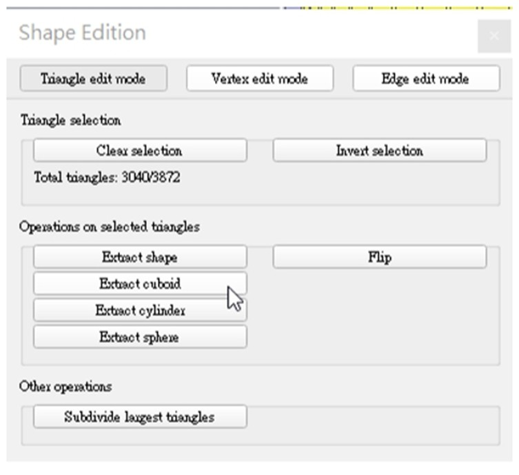
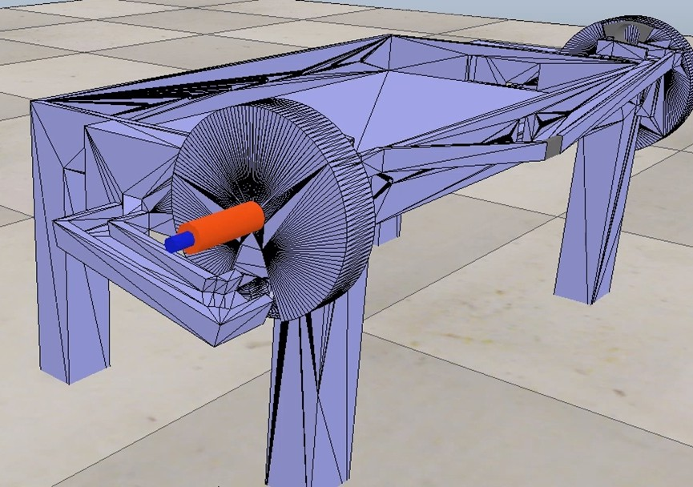

首先在 onshape 將想要使用的零件圖或組合圖按照如下圖

匯出成.stl 檔，再至v-rep 中開啟.stl 檔 使用 [File–>Import–>Mash…]，如下圖

依據個人所需去做點選，在按 OK 即可在視窗中導入模型。可以從下圖中看出

導入的模型是未分離的模型 (如若是零件圖則不須此步驟)，
所以我們使用 [Edit–>Grouping/Merging–>Divideselectedshapes] 來將模型中的物件全都爆開，如下圖
。
接下來說明桌檯簡化步驟
1 .使用[File–>Newscene] 建立新的檔案， 然後使用 [Edit>CopyselectedObjects] 到一個新建的場景。
2 . 將人物貼上 使用 [Edit –> Paste buffer]。
3 . 點選頁面選擇器工具欄按鈕 ，如圖，使得在簡化的過程中更容易點選
4 . 選取桌檯再點選形狀編輯模式工具欄按鈕來進行簡化如圖 在此我框選桌檯
再點選簡化 的對話框 Operations on selected triangles 中的 Extract cuboid 如下圖

5 . 之後會出現 Primitive cuboid 的對話框並按下 OK 即會產生一個立方體如下圖

桌檯的簡化 就完成了！
簡化示範影片：